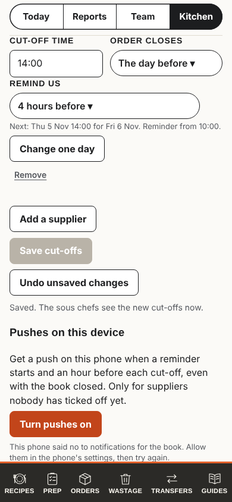
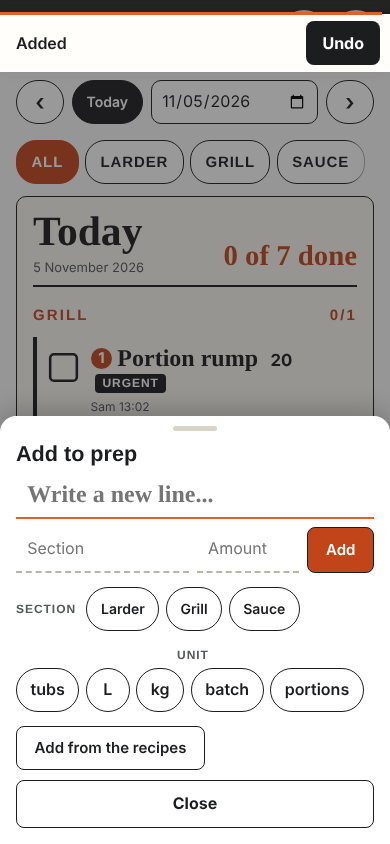
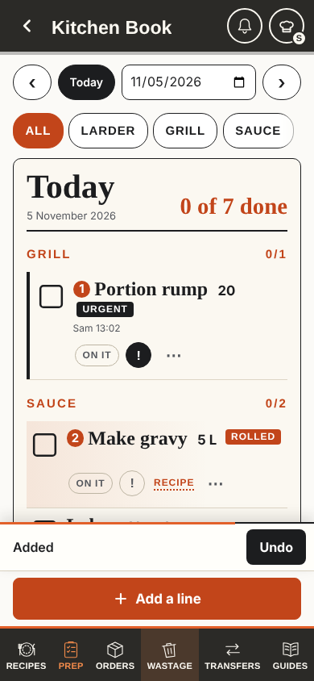

Today
The book at 390 px, from the click tests' stand-in. Save cut-offs greys, then a small grey line says Saved; the button stays grey and Undo unsaved changes stays live. Add says only "Added", and once the sheet closes the new line is out of sight below the slip and the Add bar.
Cut-offs, after Save

Add sheet, after Add

Sheet closed

Shared by all three
What all five reviewers asked for. Each design below has these, then does one thing differently.
Save says Saved
- Every admin and editor Save uses the book's Save button: Saving..., then Saved with a tick for 1.2 s once the server answers, Try again in red if not.
- Then the out-of-date words go: Undo unsaved changes is off, "Save to make the change" goes.
Words say what and where
- "Added Slice tomatoes to Sauce", not "Added".
- Undo says "Undone: Slice tomatoes". Untick and Put back say so too.
- One line on the slip; long names are cut with an ellipsis.
No orange for "just now"
- Orange already means urgent, rolled and the counts. Anything marked "just now" uses a pale highlighter yellow with a darker edge, plus words, never colour alone.
- Reduce motion: no fade, the mark simply goes.
A · Words only
Changes the least. The shared part and nothing else: nothing moves, nothing is marked. The slip and the button carry it.
Cut-offs, after Save
Order cut-offs
Next: Fri 6 Nov 16:00 for Wed 11 Nov.
Mon to Sat · the day before · 14:00
Saved 14:02. The sous chefs see the new cut-offs now.
- Tap: the button says Saving..., same width.
- Server answers: Saved with a tick for 1.2 s, then back to Save cut-offs, off.
- The line under it is green, full size, with the time, and stays until the next change.
Add sheet, after Add
Add to prep
- Add: the box empties and stays ready for the next line, as today.
- The slip names the line and its section.
Sheet closed
Today
0 of 7 done- Close: the page stays where it was. The new line is below, out of sight.
- The slip still names it for the rest of its 9 s.
Pros
- Smallest build, no motion, nothing moves under a finger.
- Fixes the head chef's case fully.
- The tests check words and states only.
Cons
- The new line is still never seen until someone scrolls.
- Does not bring back the "it took me there" feel the head chef was used to.
B · Land on it
Rethinks the end of a task. When a sheet, form or editor closes after a save, the page shows the thing that changed: it scrolls it into view only if it is off screen, and marks it "Just added" in highlighter yellow until the next tap or 8 s. No scroll while a sheet is open or while the person is adding; never for a change from another phone.
Cut-offs, after Save
Order cut-offs
Mon the day before 14:00 · Wed by Fri 16:00
Mon to Sat · the day before · 14:00
- Tap: Saving..., as A.
- Server answers: Saved with a tick for 1.2 s.
- The supplier that changed folds to its summary, comes into view and is marked with "Saved 14:02".
Add sheet, after Add
Add to prep
- Add: as A, the box stays ready.
- Close names what it will show.
Sheet closed
- Close: the list scrolls once so the last line added sits above the slip and the Add bar.
- Every line added in that sheet is marked Just added until the next tap or 8 s.
- A section tab that hides the line is left as it is; the slip says where it went.
Pros
- Shows the result itself, where it lives. Brings back the scroll the head chef was used to (the inline form until 4 Nov).
- Reuses the existing scroll and mark helper, unused since 4 Nov.
- Editors and supplier pages land on the saved row the same way.
Cons
- The page moves once after Close. On the shared tablet someone else may be reading.
- Needs the mark kept by line id so a redraw does not wipe it, and Recipes shelves need
backHome(). - Most code per page of the three.
C · Receipt where you look
Removes the most. Nothing ever scrolls and the slip leaves the add sheets. The sheet keeps a short receipt of what this sheet added, each with its own Undo; a save leaves a stamp on the thing saved for the shift. The grey "Saved." lines under buttons go.
Cut-offs, after Save
Order cut-offs Saved 14:02 by you
Next: Fri 6 Nov 16:00 for Wed 11 Nov.
Mon to Sat · the day before · 14:00
- Tap: Saving..., as A.
- Server answers: Saved with a tick for 1.2 s.
- The heading keeps a stamp, "Saved 14:02 by you", until the page is left. No line under the button.
Add sheet, after Add
Add to prep
Added from this sheet
- Add: the line joins the receipt at the top, right under the box the cook is looking at.
- Each line has its own Undo for as long as the sheet is open.
- No slip over the page while the sheet is open.
Sheet closed
Today
0 of 8 done- Close: nothing moves and no slip follows; the receipt was the confirmation.
- Undo after Close is in the line's ⋯, as Remove is today.
Pros
- The confirmation sits under the cook's eyes in the sheet, with every line added, not only the last.
- No slip covering the list after adding; nothing moves.
- A save's stamp stays, so a second look later still shows it went through.
Cons
- The receipt takes room in the sheet: on a small phone the chips may need a scroll.
- Undo moves for adds: from the slip (9 s) to the sheet and then the ⋯. People know the slip.
- Four add sheets change; the slip stays for ticks and removes, so two ways to undo.
Mix · A and C, with a small stamp
Asked for by the head chef after round 2. A's Save button and slip words, C's receipt inside the add sheet, and one small stamp that says what just happened, in the place it happened. Nothing scrolls by itself.
Cut-offs, after Save
Order cut-offs
Next: Fri 6 Nov 16:00 for Wed 11 Nov.
Mon to Sat · the day before · 14:00
- Tap: Saving... on the button, same width.
- Server answers: Saved with a tick for 1.2 s, then Save cut-offs, off. Undo unsaved changes looks off.
- The supplier that changed wears a small green stamp, "Saved 14:02", until the page is left or it changes again. No grey line under the button.
Add sheet, after two adds
Add to prep
Added just now
Section
- Add: the box empties and stays ready, as today.
- The line lands in "Added just now", right under the box: name and section, newest at the bottom, the last two only.
- Each has a 44 px Undo button for as long as the rules allow its writer to undo it (2 minutes). No slip at the top while the sheet is open.
Sheet closed
Today
0 of 8 done- Close: nothing moves. The slip names the last line, with Undo where people know it, for the rest of its time.
- Ticks, removes and Undo say the line's name on the slip: "Ticked Make gravy", "Undone: Slice tomatoes".
Scrolled down by the cook
- The lines this phone just added wear a small ink stamp, "New 14:02", for 2 minutes, so they are easy to find when scrolling.
- Only on the phone that added them; other phones see the line as usual.
What it takes from each
- A: the Save button that says Saved, the slip that names the line, nothing moving, Undo on the slip after Close.
- C: the receipt under the cook's eyes while adding, with every line it added (the last two).
- The stamp: B's "which one changed" without the yellow fill or the scroll.
Watch out for
- The sheet is about 100 px taller with the receipt: drawn here with every row of today's sheet, it still fits at 390 by 844.
- Two places to undo an add: the receipt while the sheet is open, the slip once it closes. Same word, same button.
- The stamp is a word, not a colour, so glare does not wash it out.
Side by side
Counted from the click tests' stand-in and these drawings at 390 px. Main task: add one prep line from the Prep tab (tap Add a line, type, tap Add) and tick one line.
| Today | A · Words only | B · Land on it | C · Receipt | |
|---|---|---|---|---|
| Taps to add a line / tick a line | 2 + typing / 1 | 2 + typing / 1 | 2 + typing / 1 | 2 + typing / 1 |
| List lines visible at 390 px after Close | 4 (the slip covers 1 for 9 s) | 4 (as today) | 4 (as today, the page moved to the new line) | 5 (no slip) |
| New line seen without scrolling | No | No (named on the slip) | Yes, marked | In the sheet, not on the list |
| Save says Saved on the button | 4 forms of about 20 | All | All | All |
| Something moves by itself | No | No | Once, after Close or a save that closes a form | No |
| Pull requests | 2 | 3 to 4 | 3 | |
| Relearning | None | Little: the page goes to the line | Some: Undo for adds is in the sheet | |
| New reads, listeners or rules | None | None | None | |
| Main risk | Still not seeing the line | Moving the page under someone's finger | A crowded sheet on a small phone |
The brief with the council's scores and the recommendation is docs/action-feedback-options/brief.md.